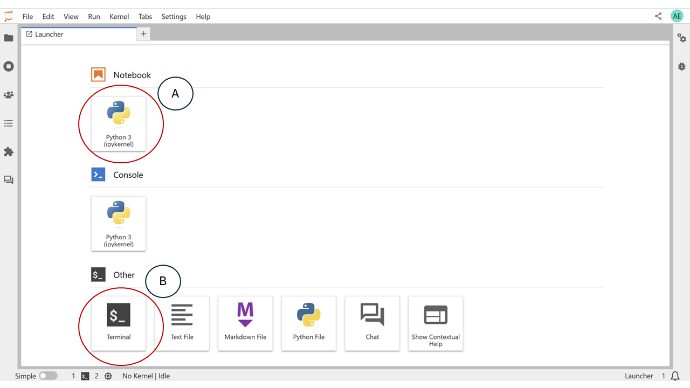
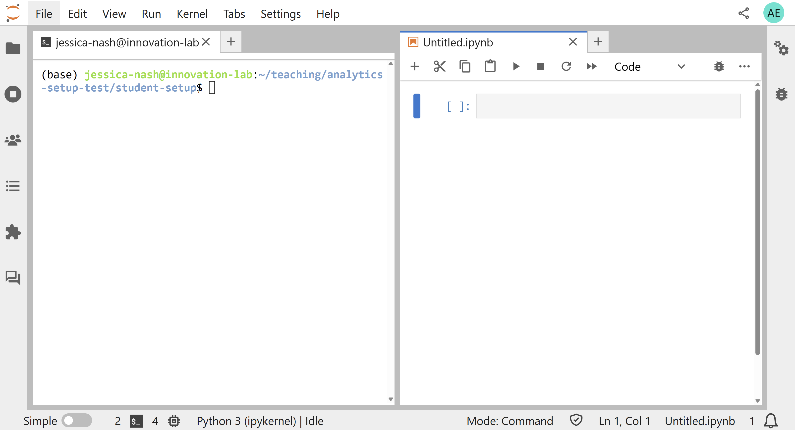

Coding Agents for Analytics Work#
This session uses Codex, a coding agent from OpenAI, to investigate a dataset and answer questions about it while keeping the work reproducible. This page covers the workspace and the requirements your analysis must meet before you write the first prompt.
Workspace#
The setup step prepares everything required. For this session:
JupyterLab is the working environment.
The notebook is the analysis artifact: the file you keep, rerun, and share.
Codex is the coding agent, run from a terminal inside JupyterLab.
The project contains a
data/folder with the files to analyze.
Codex’s work should run in the project environment created during setup and be written into the notebook.
For the workshop, we will use Codex in a JupyterLab terminal. The notebook remains the analysis artifact, but the agent interaction happens in the terminal. This gives participants one consistent place to approve actions, see commands, and decide when to start a fresh session.
Opening JupyterLab and Codex#
To open JupyterLab, you should navigate to the directory where you would like to work using your terminal. You can then launch JupyterLab using the jupyter lab command:
cd /to/project/path
jupyter lab
When JupyterLab opens, it usually starts on the launcher screen. The launcher is the starting point for creating new notebooks, opening terminals, and accessing project files.
{kind=link}

The JupyterLab launcher is where you open the notebook and terminal workspace.#
In the screenshot, A marks the Python notebook tile. Use this tile to create a new notebook for the analysis. The notebook is where the code, outputs, notes, and final analytical steps should live.
For this workshop, open a Terminal from the launcher or the JupyterLab menu, then start Codex in the project folder. The exact command may depend on your setup, but the workflow is the same: Codex runs in the terminal, and the notebook records the analysis.
Arrange the terminal and notebook side by side. This keeps the agent interaction visible while you review the code and output in the notebook.
{kind=link}

Keep the terminal and the analysis notebook visible at the same time in the JupyterLab workspace.#
You can open Codex by typing
codex
into your terminal.
Codex terminal basics#
In the Codex terminal, most of what you type is a normal prompt. Messages such
as “profile the data in data/” or “add a short notebook section explaining
this chart” are sent to the agent as work requests.
Codex also has slash commands for controlling the session. Slash commands
start with / and are handled by the Codex interface rather than treated as
analysis prompts.
Useful commands to know:
/helpshows the commands available in your installed Codex version./statusshows session and environment information./modellets you inspect or change the model for the session./newstarts a fresh session./compactsummarizes the current conversation to reduce context./quitexits Codex.
Use /help as the source of truth. Codex versions can differ, and the available
commands may change.
Prompt or command?
If you want Codex to do analysis work, write a normal prompt. If you want to control the Codex session itself, use a slash command.
Exercise: Prepare the workspace
Open JupyterLab and arrange a terminal and a new Python notebook side by side. Confirm that the notebook is using the project Python environment prepared during setup.
Before continuing, make sure you can identify:
where you will type prompts to Codex
where Codex should record code and outputs
where the project files and
data/folder are located
What a coding agent does#
A coding agent is an AI assistant connected to a working project environment. Codex can read files, write Python, run that Python, edit files, and produce plots in the course of answering one request. It can change the project rather than only describing it.
This raises a requirement that does not apply to a chat assistant. When the output is code and analysis, that output must be possible to follow and verify because the answer depends on specific data, transformations, calculations, and assumptions. As we will see in the lessons, by default, Codex may run calculations in a temporary terminal, report a conclusion, and leave no corresponding code in the notebook. The result cannot then be checked or reproduced.
Requirements for the analysis#
Each analysis in this session must be:
Understandable — the code and explanations can be read and followed.
Reviewable — analytical steps are separated clearly enough to check individually.
Traceable — every stated result corresponds to specific code and output.
The process#
The work proceeds as an iterative cycle rather than a single prompt:
Run a prompt.
Review what Codex did.
Identify what was missing or incorrect.
Record a rule to correct it.
Run again, then continue into the analysis.
The remaining pages apply this cycle to the checkout dataset: an initial broad prompt, a set of project rules, a structured investigation of the data, and a trend analysis.
Key points
A coding agent works inside a project environment, not only in a chat window.
The notebook is the analysis artifact students should be able to rerun and review.
Agent-produced analysis must be understandable, reviewable, and traceable.